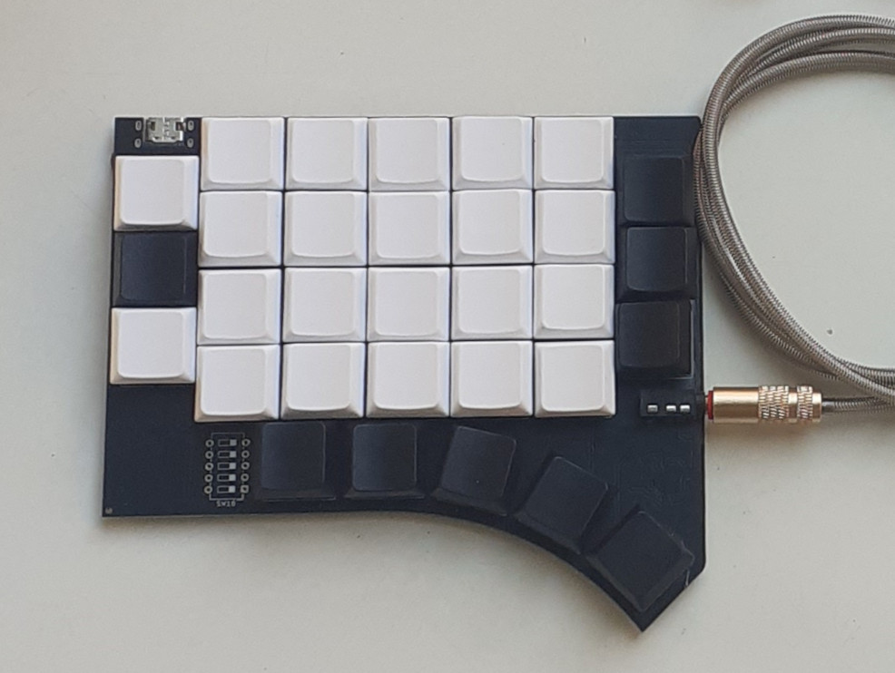

name: inverse layout: true class: center, middle, inverse --- layout: false # QMx2040 le clavier Extrêmement Normal <!-- - <small>[intro](#2)</small> --> - [Objectif #1 (Quacken) : le meilleur clavier du monde](#3) - claviers ergonomiques modernes - ajustements nécessaires pour le français - conception du clavier 1DFH ultime - [Objectif #2 (QMx2040) : un clavier pour tout le monde](#28) - approche centrée sur les dispositions ISO - conception du clavier le plus normal qui soit - [Modèle économique open-hardware](#41) - <small>[conclusion](#47)</small> .footnote[:kazé / [@fabi1cazenave](https://github.com/fabi1cazenave)] --- ## Expérience personnelle - développement logiciel (INRIA, Mozilla, freelancing…) - animation d’ateliers Vim depuis 14 ans - 4 décennies de touch-typing - Azerty, Qwerty, Dvorak, Bépo… - 2 décennies d’ergonomie clavier - participation à la conception du TMx 2030 - auteur de [QWERTY-Lafayette](https://qwerty-lafayette.org) - contributeur actif d’[Ergo‑L](https://ergol.org) - principal auteur d’[Arsenik](https://ergol.org/claviers/arsenik) et [Selenium](https://onedeadkey.github.io/selenium) - co-concepteur du [Quacken](https://onedeadkey.github.io/quacken) - concepteur du [QMx2040](https://onedeadkey.github.io/qmx2040) --- template: inverse # Objectif #1 : Quacken faire le meilleur clavier du monde  --- template: inverse ## Claviers ergonomiques modernes de Lillian Malt à Jack Humbert,<br> 40 ans d’évolutions --- ## [Lillian Malt](https://en.wikipedia.org/wiki/Maltron) a marqué l’histoire <p style="margin: 0">Maltron <small>(1977)</small>, Kinesis <small>(1992)</small>, MoErgo Glove80 <small>(2023)</small>…</p>  ❤️ les mains ne bougent plus !<br> ❌ onéreux, adaptations requises, thumb clusters --- ## TypeMatrix 2030, l’ergonomie facile <small>(2007)</small>  ❤️ prix, prise en main, Entrée et Backspace au centre<br> ❤️ peu d’adaptations requises (=> utilisable en Bépo)<br> ❌ les mains doivent bouger<br> ❌ membrane, non programmable --- ## ❌ ErgoDox, l’hybride <small>(2010)</small> <p style="margin: 0">ZSA Moonlander, Dygma Defy…</p>  ❤️ open hardware<br> ❌ les mains doivent bouger<br> ❌ complexité, adaptations requises, thumb clusters --- ## [Jack Humbert](https://jackhumbert.com/), l’ère du Planck ❤️ <small>(2015)</small>  ❤️ open hardware, [QMK](https://qmk.fm), prix abordable<br> ❤️ 1DFH => les mains ne bougent plus !<br> ❌ adaptations requises — délicates en français --- ## 1DFH = 1u Distance From Home Il y a donc deux approches ergonomiques : - historique / **5×6** / Lillian Malt (Kinesis, MoErgo)<br> = rendre acceptable les touches excentrées - moderne / **3×6** / 1DFH (Planck, Atreus, Corne, Ferris…)<br> = supprimer les touches excentrées Aucune des deux n’est utilisable telle quelle en français<br> => adaptations requises. Le 1DFH a un ratio efficacité/complexité imbattable. **Les hybrides ne fonctionnent pas** : Ergodox-like, 4×6…<br> L’intérêt est purement marketing (= achat rassurant). --- template: inverse ## Adaptations 1DFH les pré-requis des Poticlaviers --- ## Tous les caractères sur 30 touches ? - 26 lettres non accentuées - 4 touches de ponctuation : <kbd>,;</kbd> <kbd>.:</kbd> <kbd>’!</kbd> <kbd>-?</kbd> - « 1dk » = touche morte positionnelle <kbd>★</kbd> <br> (change la lettre suivante selon sa position) - <kbd>★</kbd> [lettre] = accent grave ou altération (à, è, ù, ç, œ) - <kbd>★</kbd> [touche à gauche d’une voyelle] = accent aigu (é) - <kbd>★</kbd> [touche sous une voyelle] = circonflexe (â, ê, ŷ, û, î, ô) - <kbd>★</kbd> <kbd>★</kbd> [voyelle] = tréma (ä, ë, ÿ, ü, ï, ö) - … et d’autres altérations : symboles, tirets, ponctuations… - 30 symboles en <kbd>AltGr</kbd> --- ## Dispositions 1dk - dispositions natives : [Lafayette](https://qwerty-lafayette.org), [Ergol](https://ergol.org) - adaptations possibles : (k)azerty-1dk, bépolar <object data="images/aekeynox/azerty1dk.svg"></object> 1dk = passage obligé pour l’ergonomie des dispos non US [onedeadkey.github.io](https://onedeadkey.github.io) --- ## Arsenik : NavNum <object data="images/aekeynox/arsenik_nav.svg"></object> => navigation et nombres en position dactylo --- ## Arsenik : thumb-taps <object data="images/aekeynox/arsenik_tt.svg"></object> => Entrée et Backspace sous les pouces --- ## Arsenik : homerow-mods <object data="images/aekeynox/arsenik_hrm.svg"></object> => thumb-shifting + modifieurs en position de repos --- ## Le Grand-Œuvre des Ergonautes Pour qu’on puisse taper confortablement en français en 1DFH, il aura fallu : - [kalamine](https://github.com/OneDeadKey/kalamine) pour builder des dispos 1dk - [QWERTY-Lafayette](https://qwerty-lafayette.org), [Ergo‑L](https://ergol.org) - à défaut : AZERTY-1dk, Bépolar… - [DuckTypist](https://ergol.org/dactylo) pour l’apprentissage dactylo - [Arsenik](https://ergol.org/claviers/arsenik) pour l’apprentissage dactylo pour l’apprentissage des touches duales … reste à faire le Poticlavier ultime ? --- template: inverse ## Quacken le Poticlavier ultime --- ## Limites du clavier “standard” - barre d’espace parfois trop grande - 5u c’est OK — mais 6.25u non, 7u vraiment pas - <kbd>Shift</kbd> et <kbd>Sym</kbd> pourraient être plus confort - keyboard ghosting - certains combos peuvent être bloqués par la membrane - switches trop durs (hrm) - géométrie perfectible Arsenik via Kanata se veut une *bonne* solution sur laptop : - grâce à la barre d’espace en 5u ; - pour *la plupart* des utilisateurices. Pour une *très bonne* solution, il faut un clavier ergonomique. --- ## Géométrie radi(c)ale Arsenik + ISO est déjà meilleur que la plupart des claviers. On veut **mieux**. - taper les mains le plus à plat possible<br> => gros stagger vertical + gros splay - trois bonnes touches par pouce<br> => un vrai arc de cercle - low-profile Géométrie sans compromis, quitte à être élitiste<br> => ajustement millimètre par millimètre ! *« On débute avec Arsenik, on passe au Quacken après. »* <small>(Ou pas, vu qu’Arsenik est déjà très bien.)</small> --- ## Conçu pour le *group buy* On compte le fabriquer en nombre pour faire baisser les coûts. Il faut donc concilier des demandes diverses. - conception monobloc *splittable* - configurable en 3×6 ou 3×5 - positions médianes (Hummingbird) - firmware facile à prise en main : - flashage par glisser-déposer (.uf2) - personnalisation via ZMK Studio ou GitHub - configuration type Arsenik (=> Selenium) --- ## Un clavier, [22 configurations](quacken/keeb.html) <iframe style="aspect-ratio: 3/2" src="quacken/keeb.html"></iframe> --- ## Une keymap, [4 saveurs, 2 variantes](quacken/keymap.html) <iframe style="aspect-ratio: 3/2" src="quacken/keymap.html"></iframe> --- ## Une centaine de modèles produits  --- ## Une centaine de modèles produits  --- ## Une centaine de modèles produits  --- ## Une centaine de modèles produits  --- ## Une centaine de modèles produits  --- ## Le meilleur clavier du monde… La réception a été (très) enthousiaste : - la config monobloc a agréablement surpris<br> <small>(simple et efficace)</small> - le combo stagger + splay a été bien ajusté<br> <small>(convient à toutes les tailles de mains)</small> - les touches de pouce tombent sous les doigts - plus accessible que prévu<br> <small>des personnes ont débuté Ergol ou Lafayette avec le Quacken</small> - les keymaps Selenium font des adeptes hors Quacken <!-- Pour le bureau des Ergonautes : objectif rempli. --> <!-- - on tape les mains à plat --> <!-- - faible coût de production (< 100 €) --> *« L’aboutissement du Grand-Œuvre. »* --- ## … mais pas pour tout le monde. Il est nécessaire (et suffisant) d’**apprendre** : - une dispo de clavier 1dk (Lafayette, Ergol, Azerty-1dk…) - une keymap avec des layers (Arsenik, Selenium…) Inutilisable sans méthode dactylo **stricte**.<br> <small>Utiliser l’annulaire sur la 5e colonne => échec.</small> Le clavier est perçu comme trop complexe : - trop de configurations géométriques<br> <small>(Corbeau, Chouette, Huppe…)</small> - trop de configurations de firmware - trop peu de touches --- template: inverse # Objectif #2 : QMx2040 faire un clavier pour tout le monde  --- ## Objectif : utilisation immédiate - dispositions ISO supportée « out of the box » - => exit les géométries Malt (5×6) et 1DFH (3×6) - une seule configuration - une seule géométrie - un seul firmware - moins punitif en dactylo approximative On garde 80 % des objectifs ergonomiques : - limitation des extensions de doigts - modifieurs sous les pouces (Shift…) - touches en colonnes pour favoriser la dactylo stricte On accepte de bouger **un peu** les mains. --- ## Inspiration : OLKB Preonic (4×6) ❤️  = le meilleur ratio efficacité/complexité que je connaisse --- ## #1 : les 40 bonnes touches <iframe src="qmx2040/keeb.html#step1"></iframe> Grille ortho : simple et efficace… … à condition de se contenter de 5 colonnes --- ## #2 : les colonnes extérieures <iframe src="qmx2040/keeb.html#step2"></iframe> Le stagger de 0.5u limite la gêne des extensions. Asymétrie assumée => compatibilité AZERTY et Bépo ! --- ## #3 : les touches de pouces <iframe src="qmx2040/keeb.html#step3"></iframe> Héritage Quacken : *thumb shifting* = le plus gros gain à faire sur un clavier ergo ? --- ## #4 : les colonnes centrales <iframe src="qmx2040/keeb.html#step4"></iframe> => Utilisable sans touches duales Hommage au TypeMatrix 2020 :-) --- ## #5 : la [keymap](qmx2040) (WiP) <iframe src="qmx2040/index.html"></iframe> Un seul layer pour Nav+Num+Fn+Media La phase de *dogfooding* est encore en cours --- ## Premier proto : Neo  - géométrie convaincante, mais espacement à ajuster - assistant de *rubber-duck debugging* intégré --- ## Deuxième proto : Morpheus  - ajout de 1.05 mm de marge entre les doigts => validé ! - composants en face avant => plus robuste --- ## Un *vrai* clavier ergo On a supprimé trois anti-patterns : - pas de flèches en direct (=> layer de navigation) - pas de Shift sous les auriculaires (=> pouces) - pas de marquage (=> dactylo requise) Les points forts : - ♥️ le clavier ergo le plus simple du monde - ♥️ les touches de pouce Le premier hybride Ergo/ISO ?<br> <small>Le premier clavier ergo 100 % compatible AZERTY/Bépo, en tout cas.</small> --- ## Quaxe - split en deux parties *(booooooring)* - conversion macropad + Quacken 36 touches 🚀 <p></p> Rien à dessouder (hotswap), compter 20 € de PCB --- ## Le Split Français On ouvre les commandes jusqu’au 14/07 - en avant-première sur le stand des Ergonautes - sur notre boutique HelloAsso à partir du 1er juin Clavier en kit, assemblage sans outil - PCB hotswap ~ 45 € de prix de revient - + 65 switches (Sunset, Red Pro…) - + 65 keycaps (DDC) Livraison : début septembre --- template: inverse # Modèle économique  --- ## Cramer le business des claviers à 400 € Modèle économique des fabricants de claviers ergo : - vendre du clavier premium plutôt qu’ergo - proposer des designs rassurants (hybrides, 4×6…) Exemple-type, le marquage des touches : - aucun clavier n’a d’intérêt ergo sans dactylo - quasi aucune marque ne vend de clavier sans marquage Vécu chez TypeMatrix, constaté partout ailleurs. <br> <small>(Pire marque : ZSA.)</small> --- ## On propose une *alternative* - conception avec RP2040 intégré - plus complexe que les claviers DIY sur Pro Micro / XIAO - mais beaucoup plus économique à produire - fabrication par lots - il faut environ 50 PCB pour faire tomber le coût de production - on achète les switches et keycaps par lot aussi - sans fioriture - le clavier est 100 % fonctionnel mais sans boîtier - des boîtiers libres sont en cours de conception - sans but lucratif - montage associatif, conception bénévole - les gains de chaque lot payent la R&D du modèle suivant - vente à prix libre --- ## Réparer, Réutiliser, Recycler Minimaliste mais durable : - facile à réparer - les touches du QMx sont réutilisables - keycaps sans marquage, donc réutilisables - on recycle tout ce qui est possible - expéditions faites avec de la récup - les 6e colonnes du Quacken font de jolis porte-clés --- ## Open-Hardware Le Quacken et le QMx2040 sont libres (GPLv3) : - géométrie Ergogen - fichiers de design mécanique (FreeCAD, .dxf) - fichiers de design électronique (KiCad, Gerber) - firmware ZMK (Ækeynox) => liberté d’utiliser, d’étudier, de modifier et de produire nos claviers. La limite : on publie les sources *après* avoir « rentabilisé » un design (i.e. livré un lot). --- ## Comptes publics Les bénéfices et dons permettent déjà de payer : - les prototypes - la participation au CdL et aux JdLL À l’avenir, il sera peut-être possible de payer : - des outillages : scie de table, vrai fer à souder… - une partie des heures de travail effectuées<br> (mise au point, gestion, assemblage, expéditions…) --- template: inverse  --- ## Conclusion - essayez les poticlaviers sur le stand des Ergonautes ! - la solution à 0 € fonctionne très bien aussi ^^ | ISO+Arsenik | Quacken | QMx2040 | |-------------|------------|----------| | 😓😓😓😓😓 | 😓😓😓 | 😓 | | 🚀🚀🚀 | 🚀🚀🚀🚀🚀 | 🚀🚀🚀🚀 | | 0 € | 70~100 € | 110~150 €| Le Grand-Œuvre des Ergonautes : [onedeadkey.github.io](https://onedeadkey.github.io) .footnote[:kazé / [@fabi1cazenave](https://github.com/fabi1cazenave)]